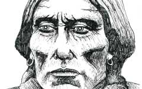
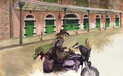
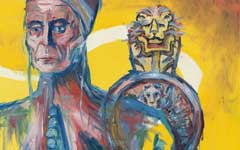
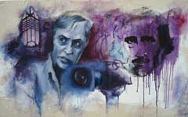
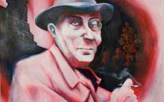
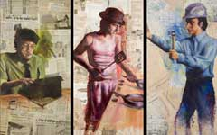
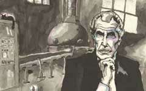
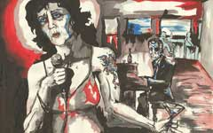
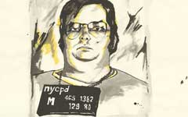
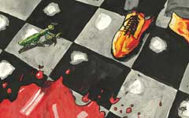

Complete triptych
Bleachwave
The Website of Charlie Thomason
Nine to Five (Triptych)
Panel 1: The Writer
Panel 2: The Chef
Panel 2: The Chef (detail)
Panel 3: The Architect
- Medium: Water-mixable oil and mixed-media on MDF board
- Size: 24” x 48” (per panel)
- Year: 2007
Summary: One goal I set for myself before I completed my BFA in Art Studio was to do something that went well beyond the limits of what I was comfortable doing in a painting. That meant exploring mixed media in new and unusual ways, as well as working on a dimension scale larger than my normal comfort level. As for the latter goal, I decided to create a triptych consisting of three 2 ft. x 4 ft. panels of MDF board. The concept was to show real professions in the modern world that utilize artistic skills—professions that aren’t glamorous or conceptually meaningful, but do allow the creator to put a unique part of themselves into the final product.
The professions I chose to show were a writer/journalist, chef, and architect. I would use myself as a sort-of model (although the goal was not to make it look exactly like me) and create 3 oil paintings, each with a distinct color scheme (i.e.: one red, one green, one blue). Around each piece, I used various adhesives to affix ripped up pieces of paper—as a “background,” if you will. The interesting thing only noticed upon closer inspection, however, is that the pieces of paper correspond in content to what profession is depicted on that panel; the writer is surrounded by newspapers from around the world, the cook is surrounded by recipes and restaurant advertisements, and the architect is surrounded by blueprints. For the newspapers, I went a few different newsstands that sold international and foreign-language newspapers. For the blueprints, I used pieces of the actual blueprints used to build my parent’s house, as well as some printed photos I had taken of a brick wall.
When my graduating BFA exhibition was held at the Historic Kentucky Theatre in Lexington (December 2007), this triptych was essentially the “centerpiece” of the show. Each panel had taken 1-2 weeks to complete, and then a tremendous amount of time was spent ensuring that the torn pieces of paper would stay permanently adhered. The 3 pieces have been digitally photoshopped together for the purposes of this online portfolio, although they are still 3 entirely-separate panels.
Art Gallery
-
 Quanah Parker Medium: Ink on paper
Year: 2012 -
Frederic Chopin Medium: Watercolor & ink on paper
Year: 2012 -
Mingo Jack (Cover) Medium: Oil on panel; Book cover
Year: 2010 -
 Motorcycle Guitarist Medium: Oil on paper
Year: 2011 -
Eternal Sunshine Medium: Watercolor & ink on paper
Year: 2012 -
Self-Portrait Medium: Graphite on paper
Year: 2007 -
 Melting Doge Medium: Oil on paper
Year: 2010 -
 Corman and Poe Medium: Oil on canvas
Year: 2007 -
Green Rachel Medium: Graphite on paper
Year: 2007 -
 Fritz Lang Medium: Oil on canvas
Year: 2007 -
 Nine to Five (Triptych) Medium: Mixed media on panel
Year: 2007 -
 Vincent Price Medium: Ink on paper
Year: 2006 -
 American Nightmare Medium: Ink on paper
Year: 2006 -
 Mark David Chapman Medium: Ink on paper
Year: 2006 -
 Mantis Madness Medium: Ink on paper
Year: 2006
Connect


Email Charlie at:
thomason.charlie [at] gmail [dot] com